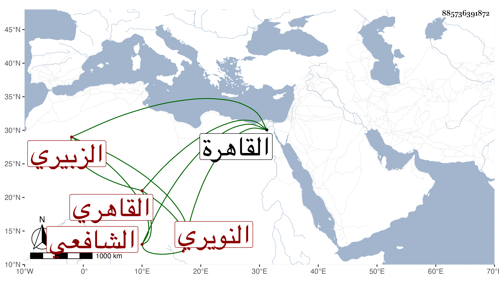

0902Sakhawi.DawLamic.ITO20230111-ara1.EIS1600.885736391872
Biography ID: 885736391872
644
قاسم بن محمد بن يوسف بن البرهان إبراهيم الزين بن الشمس الزبيري النويري ثم القاهري الشافعي ويعرف بقاسم الزبيري . ولد سنة ثلاث وتسعين وسبعمائة بالقاهرة ونشأ بها فحفظ القرآن وتلا به لأبي عمرو على الشمس الشراريبي وكتبا واشتغل في فنون ولازم الولي العراقي حتى قرأ عليه بعض شرح تقريب الأحكام لوالده وجميع شرح جمع الجوامع في الأصلين وغيرهما وسمع كثيرا من شرحه لنظم المنهاج الأصلي لأبيه ومن تحرير الفتاوى وشرح البهجة وغيرهما من تصانيفه وكذا من مروياته وكتب له على شرح جمع الجوامع أنه قرأه قراءة بحث وإتقان وتحرير لألفاظه ومبانيه واستكشاف عن مشكلاته ومعانيه وعلى شرح التقريب أنه أيضا قراءة بحث وإتقان وتكلم على الألفاظ والمعاني وذكر مذاهب العلماء في المسائل المتعلقة بذلك فأجاد الاستماع لما ألقيه وفهم معانيه فهم معانيه وأذن له في إفادة ما علمه منهما وتحققه وإقراء ما كان منهما مستحضرا له ومحققه ، وكذا أخذ الفقه عن النور الأدمي عن الشمسين الغراقي والبرماوي والبيجوري وغيرهم والنحو عن الشمسين العجيمي قريب ابن هشام والشطنوفي وغيرهما ولازم العز بن جماعة في علوم وكذا الشمس البرماوي وأكثر من الحضور عند شيخنا في الأمالي وغيرها وكتب عنه غالب شرح البخاري وسمع أيضا على الفوي والجمال الحنبلي وابن الكويك وأبي هريرة بن النقاش وآخرين ، وكان فاضلا بارعا مفننا خيرا ساكنا بطئ الحركة ثقيل اللسان تكسب بالشهادة وأقرأ بعض الطلبة مع التودد والتواضع والتقنع وسلامة الصدر كتبت عنه قليلا ، ومات في صف سنة ست وخمسين ، ونعم الرجل كان رحمه الله وإيانا .
